2026-05-08
Versão: v3.44.0-alpha13 Hardware: Raspberry Pi Pico W (RP2040 + CYW43) Data: 2026-05-08
Status do manual: STUB documentando arquitetura, telas e fluxos baseado em código + dados. Screenshots TFT + browser ficam como placeholders — gerar em próxima sessão via: -
GET /api/screenshot(já implementado, retorna BMP 320×240) para display - Headless Chrome/Selenium para browser - Comando serial novotouch sim X Ypara simular toque (não implementado ainda)
SIMUT é um sistema de monitoramento de cadeia fria laboratorial/médica para vacinas, plasma, banhos-maria, estufas e congeladores. Roda em Raspberry Pi Pico W com:
Conteúdo de data/calib.csv (chip
E6642815E34C1824):
| Sensor ID | Slot ID | Offset | Nome |
|---|---|---|---|
| (interno SHT31) | tSTH0001 | 0.0°C | Temperatura ambiente |
| (interno SHT31) | uSTH0001 | 0.0% | Umidade ambiente |
| 28600779000000B7 | STM0001 | 0.0°C | BANHO MARIA 37 |
| 28ADD07A000000E5 | STM0002 | 0.0°C | BANHO MARIA 45 |
| 28293E7900000023 | STM0003 | 0.0°C | ESTUFA 25 |
| 28E0B27B000000C7 | STM0004 | 0.0°C | ESTUFA 37 |
| 287CE07A00000092 | STM0005 | 0.0°C | GELADEIRA DE VACINAS |
| 2872F57B000000A0 | STM0006 | 0.0°C | FREEZER 1 |
| 281A2C7900000068 | STM0007 | 0.0°C | GELADEIRA COPA |
| 285C1C790000002B | STM0008 | 0.0°C | FREEZER 2 |
| 28BF2379000000B0 | STM0010 | 0.0°C | ESCONDERIJO SECRETO |
| 283C217900000080 | STM0009 | 0.0°C | GELADEIRA DE PLASMA |
12 sensores, 10 setpoints típicos: - Banho-maria 37°C / 45°C - Estufa 25°C / 37°C - Geladeira de vacinas (~5°C) - Freezer 1, 2 (~-20°C) - Geladeira COPA (~5°C) - Geladeira de plasma (~-30°C) - “ESCONDERIJO SECRETO” (apelido de operador)
| Função | GPIO | Descrição |
|---|---|---|
| TFT CS | 28 | Display ILI9341 chip select |
| TFT DC | 27 | Display data/command |
| TFT RST | 26 | Display reset |
| TFT MOSI/SCK | SPI0 | Display SPI (auto) |
| TOUCH CS | 21 | XPT2046 chip select |
| TOUCH IRQ | 22 | XPT2046 pen IRQ |
| OneWire (DS18B20) | 11..20 | Pinos por sensor (10 slots) |
| Buzzer | 9 | PWM piezo |
| LED status | 25 (LED_BUILTIN) | Heartbeat |
| BOOTSEL trigger | - | (botão físico ou via PicoHand GP0) |
| RUN reset | - | (botão físico ou via PicoHand GP1) |
tools/PicoHand/ — outro Pico dedicado conecta GP0/GP1 do
alvo para BOOTSEL/RESET via comandos serial USB CDC. Permite recovery
automatizada sem intervenção manual.
Comandos: - PING → PONG (health check) -
RESET → pulso 50ms RUN (reboot) - BOOTSEL →
BOOTSEL+RESET seq (entra em modo flash) -
HOLD <BOOTSEL|RESET> /
RELEASE <BOOTSEL|RESET> (controle manual) -
STATUS, PINOUT (diagnóstico) -
SELF_BOOTSEL (reflasha a própria mão)
Sincronização via multicore_lockout (IRQ) ou cooperative
quiet mode (requestQuietMode →
multicore_reset_core1).
| Manager | Responsabilidade |
|---|---|
| AppManager | Coordenação geral, setup/loop, sensor read |
| StorageManager | LittleFS, config encrypted, history binário |
| DisplayManager | TFT render Core 1, touch, gestures, telas |
| NetworkManager | WiFi connect, AP mode, DHCP, NTP |
| WebManager | HTTP server, auth, 50+ rotas (web + API) |
| CommandManager | CLI parser USB Serial + Bluetooth |
| LogManager | Eventos persistidos, autopsia HW WDT |
| BluetoothManager | BLE GATT services |
| AlarmManager | Detecção setpoint, ações, mute |
| TelemetryManager | HTTP POST batch, MQTT publish |
0x10000000 ─┬─ Boot2 (256 B) + Code/RO Data ─ 1020 KB ── Slot A (firmware ativo)
0x100FF000 ─┴─ EEPROM emulada (4 KB, NÃO USADO — F-OTA usa)
┌─ OTA Metadata (4 KB) ─ 1 setor
0x10100000 ─┤ Staging area ─ 1024 KB
│ (usado durante OTA: novo firmware)
│ (último setor 0x101FE000 = snapshot config 4 KB)
└─ LittleFS ─ 0 KB (overlap c/ staging)(Layout aproximado — F-OTA reformata LittleFS post-apply pra recuperar staging.)
A interface TFT é resolução 320×240 paisagem,
organizada em telas-foco navegáveis por toque na tela touch. Captura via
GET /api/screenshot (BMP 24-bit, autenticado, requer
PERM_SYS_CONFIG).
Figura: boot_screen.bmp — capturado via /api/screenshot_chunk com CRC32 verified (alpha18)
Figura: auth_screen.bmp — capturado via /api/screenshot_chunk com CRC32 verified (alpha18)
showAuthScreen(String expectedPin) em
DisplayManager.h:200.
Figura: dashboard.bmp — capturado via /api/screenshot_chunk com CRC32 verified (alpha18) - TopBar: hora, status WiFi, alarmes ativos - Painel ambiente (temp + humidade SHT31) - 10 slots de sensores DS18B20 (panéis menores) - BottomButtons: navegação (gráfico, alarmes, settings)
drawInterfaceFixed, drawTopBar,
drawAmbientPanel, drawSlotPanel,
drawBottomButtons.
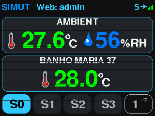
Figura: graph.bmp — capturado via /api/screenshot_chunk com CRC32 verified (alpha18)
drawGraphScreen(), drawGraphHeaderBar(),
drawPeakMarker().
Variantes: - drawGraphDetailScreen() — tela numérica de
detalhes do período - drawStatsScreen() — estatísticas
(min/max/avg) - drawCalendarScreen() — calendário com dias
de dados disponíveis
Acessível via gesto longo no dashboard. Submenus:
showSettingsMain() — menu principalshowSettingsAlarms(cfg) +
showAlarmEdit(idx) — limites por slotshowSettingsThemes(idx) — seletor de tema
(unimed_dark.thm é o atual)showSettingsLang(idx) — pt-BR / en-US (default
English)showSettingsPassword() — chpass adminshowSettingsDisplayOffset() — calibração de canto da
tela TFTshowSettingsSounds(state) — buzzer configshowSettingsLicense() — info de licençashowTouchCalibration() /
showTouchSensitivity() — calibrar XPT2046showSystemStatus() / drawSystemStatus() —
info de chip, heap, uptime, etcFigura: alarm_action.bmp — capturado via /api/screenshot_chunk com CRC32 verified (alpha18)
WiFi típico: 192.168.3.195 (DHCP). Login obrigatório
(sha256 client-side antes do POST).
Captura: Headless Chrome via Selenium. Cada página
em /data/web/*.gz é servida via PROGMEM ou LFS.
/login (sem auth)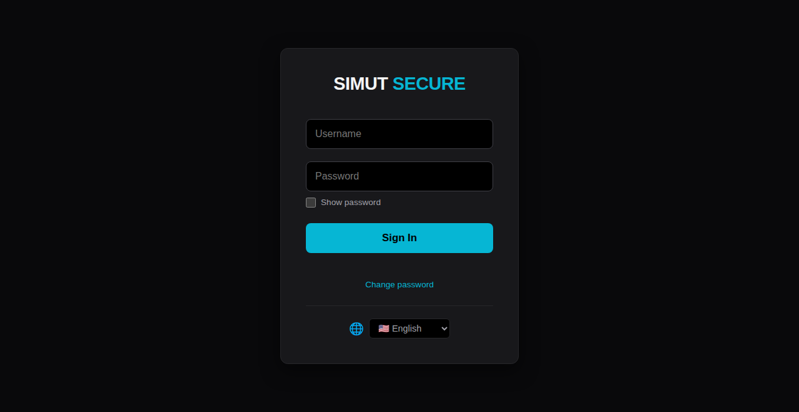
Figura: web_login.png — capturado via /api/screenshot_chunk com CRC32 verified (alpha18)
handleLogin() → POST /api/login_init
retorna nonce; POST /api/login com sha256 da senha +
nonce.
/force_chpass (após primeiro login com OTP)Figura: web_force_chpass.png — capturado via /api/screenshot_chunk com CRC32 verified (alpha18)
/ (Dashboard)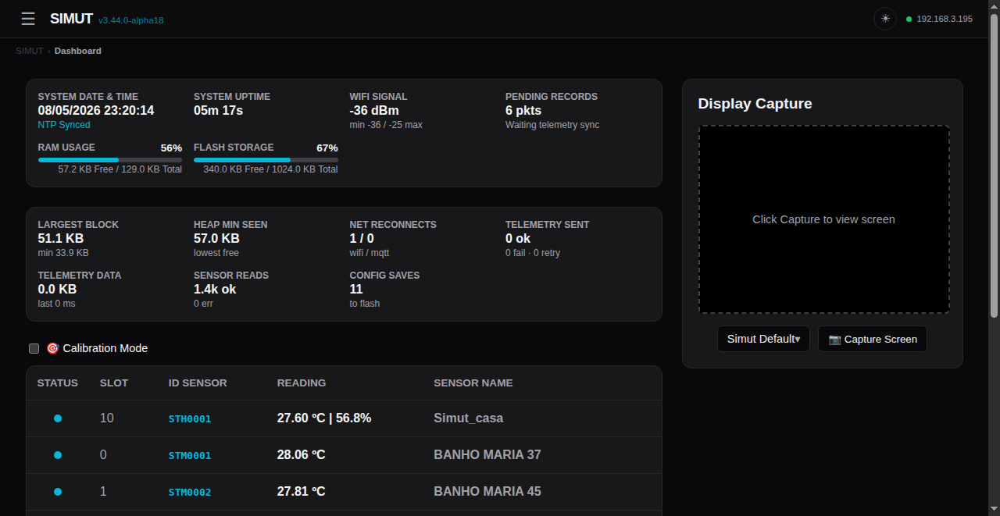
Figura: web_dashboard.png — capturado via /api/screenshot_chunk
com CRC32 verified (alpha18) - Painel ambiente - 10 cards de
sensores (cor por estado: ok/warn/error) - Botão Settings/Files/History
- Tema dinâmico via /api/themes
/history
(Histórico/Gráficos)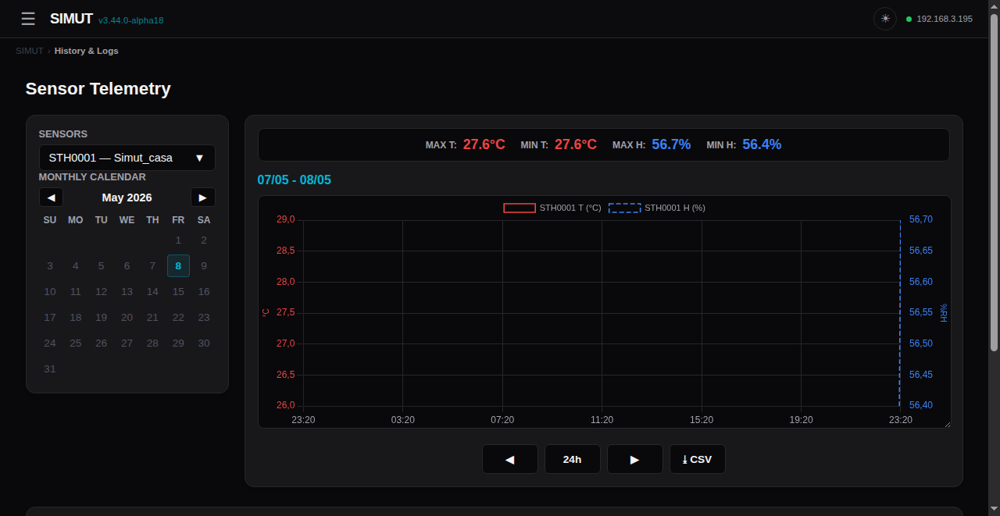
Figura: web_history.png — capturado via /api/screenshot_chunk com CRC32 verified (alpha18)
API: /api/history_multi, /api/history_days,
/api/export/history.bin (CSV-equivalente).
/alarms
(Configuração de Alarmes)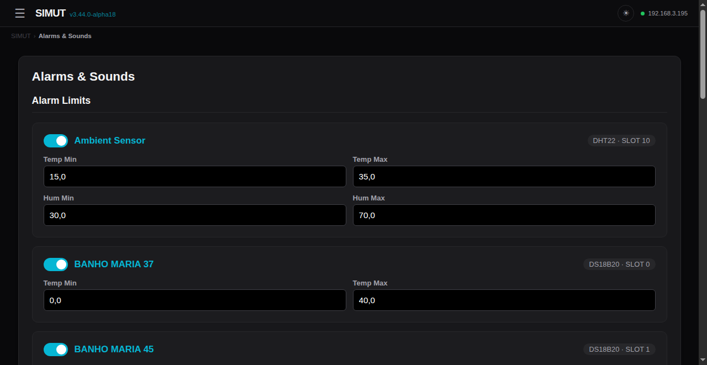
Figura: web_alarms.png — capturado via /api/screenshot_chunk com CRC32 verified (alpha18)
API: /api/alarms.
/config
(Configuração geral)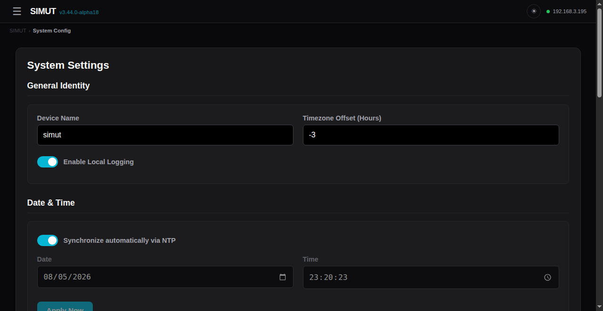
Figura: web_config.png — capturado via /api/screenshot_chunk com CRC32 verified (alpha18)
API: /api/config GET, /api/save_sys
POST.
/network (WiFi
config)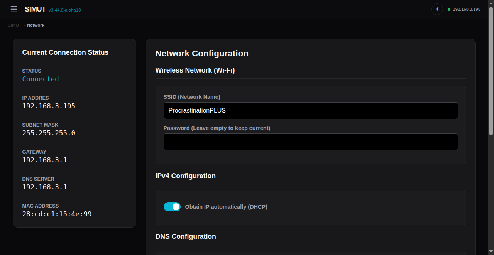
Figura: web_network.png — capturado via /api/screenshot_chunk com CRC32 verified (alpha18)
API: /api/network.
/users (Gestão de
usuários)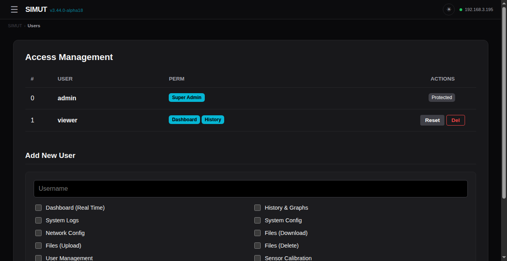
Figura: web_users.png — capturado via /api/screenshot_chunk com CRC32 verified (alpha18)
API: /api/users.
/files (File
manager + OTA Firmware)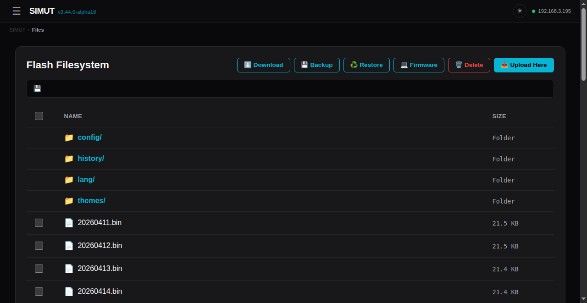
Figura: web_files.png — capturado via /api/screenshot_chunk com CRC32 verified (alpha18)
Botão Backup baixa arquivo .bkp da
LittleFS toda (GET /api/backup). Botão
Restore valida + aplica .bkp
(POST /api/restore?op=validate|apply). Botão
Firmware dispara OTA com WARN modal + safety checks
(POST /api/restore?op=stage&commit=1 +
POST /api/ota/apply).
/license +
/api/sec_status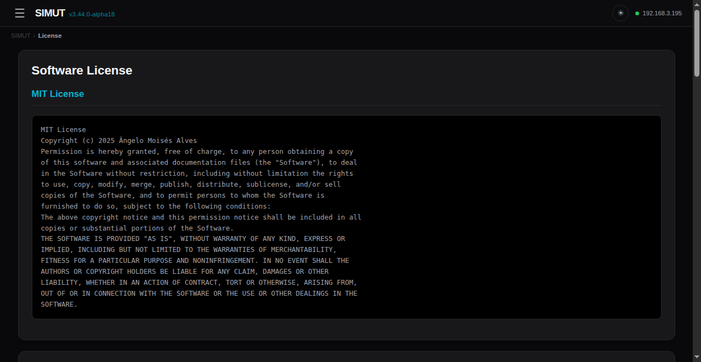
Figura: web_license.png — capturado via /api/screenshot_chunk com CRC32 verified (alpha18)
/api/status — info runtime (heap, uptime, sensors)/api/perms — permissions do user atual/api/calib GET/POST — calibração calib.csv
(offsets por sensor)/api/themes — lista de temas instalados em
/themes//api/lang — JSON de strings traduzidas/api/screenshot — CAPTURA DA TELA TFT em BMP
320×240 24-bit/api/logs GET / /api/clear_logs POST/api/export/logs.bin — eventos LogManager em formato
binárioPOST /api/restore?op=stage&commit=1 — sobe
.bin do firmware para stagingPOST /api/ota/apply — gatilho do orchestrator (HTTP
202, device reboota)/config/system.bin +
reformata LFSConectado via
/dev/serial/by-id/usb-Raspberry_Pi_Pico_W_<chipid>-if00.
115200 baud. Sem autenticação (acesso físico = autenticação).
show system info — versão, chip, config básica
show system log — dump de eventos do flash
show net status — IP, RSSI, time sync
show storage stats — uso de flash
show themes — temas instalados
show metrics — heap, net, tel, sensors operacionais
show sensors — sensores mapeados (database)
sensor scan — descoberta de novos sensores DS18B20write memory + reload
para persistir)conf system name <value> — nome do device
conf system ssid <name> — WiFi SSID (case-sensitive)
conf system pass <pass> — WiFi password
conf system timezone <offset> — UTC offset (-3 = Brasília)
conf system ntp <server> — servidor NTP
conf system theme <id|index> — tema TFT
conf system admin reset [confirm] — reset senha admin (OTP)
conf system touch reset [confirm] — reset calibração touch
conf system factory [confirm] — factory reset (apaga TUDO)
conf system history_interval <m> — intervalo de log (1..1440 min)
conf ntp <on|off> — ativa/desativa NTP
conf time <YYYY-MM-DD> <HH:MM:SS> — RTC manual
conf net dns auto — DNS via DHCP
conf net dns manual <ip1> [ip2] — DNS manual
conf sensor ds18b20 resolution <9-12> — resolução DS18B20 globalconf tel server <url> — endpoint HTTP
conf tel port <port> — porta (80, 443)
conf tel path <path> — endpoint path
conf tel batch <n> — tamanho do batch
conf tel int <s> — intervalowrite memory — persiste config no flash
reload [confirm] — reboot soft (safeReboot watchdog reset)
factory [confirm] — factory reset
language pt|en — troca idioma displayconf sensor <N> history all — recupera histórico pré factory reset
conf sensor all history all — todos os sensores (BT-only)PERM_FILE_UPLOAD/files, clicar Firmware.bkp da LFS atual.bin (firmware RAW, sem gzip)/login em ~60s# 1. Login
curl -c cookie.txt -X POST -d 'user=admin&pass=<sha256>&nonce=<nonce>' \
http://192.168.3.195/api/login
# 2. Stage + commit firmware
curl -b cookie.txt -F "firmware=@firmware.bin" \
"http://192.168.3.195/api/restore?op=stage&commit=1"
# 3. Apply (HTTP 202; device reboota)
curl -b cookie.txt -X POST http://192.168.3.195/api/ota/applytools/ota_apply.py automatiza: backup .bkp + stage +
commit + apply + wait_for_device.
Sintoma: USB enumera como 2e8a:f00a Raspberry Pi Pico W
mas serial CLI não responde, HTTP timeout.
Recovery soft: 1. RESET via PicoHand:
mão RESET ou pulso RUN físico → boot fresh 2. Configurar
WiFi via CLI (config foi preservada via snapshot)
Recovery hard (se soft falhar): 1. BOOTSEL via
PicoHand: mão BOOTSEL ou botão físico 2.
picotool erase -a (apaga TODO o flash, incluindo metadata
partition) 3.
picotool load -x tools/test_firmwares/pico_blink_echo/build/pico_blink_echo.ino.uf2
— verifica chip OK 4.
picotool load -x .pio/build/pico_w_release/firmware.uf2 —
flash SIMUT 5. Configurar WiFi novamente via CLI
Solução empírica do user (2026-05-08): flashar firmware básico (blink ou serial echo) “revive” o Pico. Após blink rodar, BOOTSEL volta a funcionar normalmente.
tools/test_firmwares/pico_blink_echo/ — UF2 mínimo de
revival.
/data/)/data/
├── calib.csv — sensor offsets + nomes (versionado)
├── config/
│ ├── system.bin — config encrypted (WiFi/users/sensors/...)
│ ├── system.bak — backup automático do system.bin
│ └── t_cursor.bin — cursor de telemetria (último ts enviado)
├── history/
│ └── YYYYMMDD.bin — histórico binário 1 ponto/min por sensor
├── lang/
│ ├── language_pt-BR.lng
│ └── language_es-ES.lng
├── themes/
│ └── unimed_dark.thm — tema TFT (RGB565 pixels + meta)
├── web/ — páginas comprimidas servidas via /
│ ├── login_page.gz
│ ├── dash_page.gz
│ ├── hist_page.gz
│ ├── cfg_page.gz
│ ├── alarms_page.gz
│ ├── net_page.gz
│ ├── usr_page.gz
│ ├── file_page.gz
│ ├── force_chpass_page.gz
│ ├── license_page.gz
│ ├── lang_js.gz
│ └── style_css.gz
├── system.blog — log binário ativo (LogManager)
├── system.old.blog — log rotacionado
└── favicon.ico# Login + obter cookie
curl -c /tmp/simut.cookie -X POST -d "user=admin&pass=$(echo -n 'senha' | sha256sum | head -c 64)&nonce=$(curl -s http://192.168.3.195/api/login_init | jq -r .nonce)" \
http://192.168.3.195/api/login
# Capturar screenshot (BMP 320x240 24-bit)
curl -b /tmp/simut.cookie -o screenshot.bmp http://192.168.3.195/api/screenshot
# Converter para PNG
convert screenshot.bmp screenshot.pngStreaming garantido: o handler
handleApiScreenshot em
WebManager_History.cpp:861 faz read row-by-row do
framebuffer com _displayRef->readRow(), alimenta WDT a
cada 4 rows, e detecta client disconnect. Resposta tem
Content-Length exato — falha de pixels = bytes faltantes
detectáveis.
Próxima sessão: adicionar comando CLI touch sim X Y em
AppManager_Commands.cpp que injeta um evento de toque
simulado em DisplayManager via
_displayMgr->injectTouch(x, y) (método novo que faria
push em _rawTouchState ou similar).
Fluxo proposto:
SIMUT> touch sim 160 120 ← toque no centro
SIMUT> touch sim 50 220 ← toque no botão "Settings"
SIMUT> touch sim 270 220 ← toque no botão "Graph"Ou via API:
POST /api/touch?x=160&y=120# Selenium/headless Chrome
python -c "
from selenium import webdriver
from selenium.webdriver.chrome.options import Options
opts = Options()
opts.add_argument('--headless')
opts.add_argument('--window-size=1280,800')
driver = webdriver.Chrome(options=opts)
# Login
driver.get('http://192.168.3.195/login')
driver.find_element('id', 'user').send_keys('admin')
driver.find_element('id', 'pass').send_keys('senha')
driver.find_element('id', 'submit').click()
# Capture pages
for url in ['/', '/history', '/alarms', '/config', '/network', '/users', '/files']:
driver.get('http://192.168.3.195' + url)
driver.save_screenshot('docs/screenshots/web' + url.replace('/', '_') + '.png')
"# Markdown → PDF via pandoc
pandoc docs/MANUAL.md -o docs/MANUAL.pdf \
--pdf-engine=xelatex \
--toc \
--highlight-style=tango \
-V geometry:margin=2cmSTABILITY_PLAN.md — plano de estabilidade canônico
(consultar antes de qualquer mudança)docs/INVESTIGATION_BOOTLOOP.md — investigação
F-OTA-BOOTLOOP (Achados #1-#7)docs/RECOVERY.md — procedimento BOOTSEL + 1200bps
trickdocs/RELEASE_NOTES_v3.44.0-alpha*.md — release notes
por alphatools/PicoHand/MANUAL_CLAUDE_CODE.md — manual da mão
robótica🤖 Manual gerado em 2026-05-08 com base em código-fonte v3.44.0-alpha13. Screenshots pendentes — gerar via captura programática quando device estável.
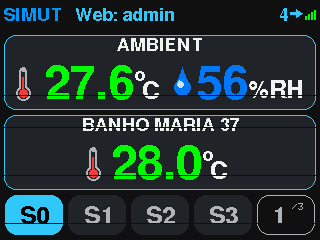
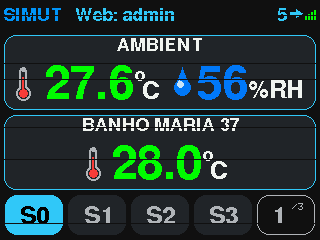
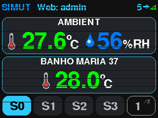
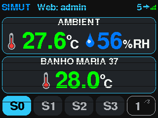